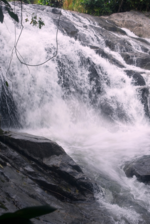

THE HORSE FIELD

海南天涯驿站旅游项目开发有限公司成立于2010年6月，注册资本壹仟万人民币，公司主营乡村、森林生态旅游资源开发及其它旅游业务。 根据《海南国际旅游岛建设发展规划纲要》(2010-2020)中的“乡村旅游和森林旅游”的发展思路要求，海南天涯驿站旅游开发有限公司本着“保护性开发，促进民生，打造高端旅游的新业态”为开发原则，结合我省生态文明村和旅游小镇建设，决定将“农家乐、民俗文化、度假休闲、旅游观光、自驾车驿站、房车营地”的理念融合到一起，计划用5年时间在岛内投资建设约30个风格各异的休闲旅游休憩地，全力打造“天涯驿站”乡村旅游品牌。 海南天涯驿站旅游项目开发有限公司成立于2010年6月，注册资本壹仟万人民币，公司主营乡村、森林生态旅游资源开发及其它旅游业务。 根据《海南国际旅游岛建设发展规划纲要》(2010-2020)中的“乡村旅游和森林旅游”的发展思路要求，海南天涯驿站旅游开发有限公司本着“保护性开发，促进民生，打造高端旅游的新业态”为开发原则，结合我省生态文明村和旅游小镇建设，决定将“农家乐、民俗文化、度假休闲、旅游观光、自驾车驿站、房车营地”的理念融合到一起，计划用5
年时间在岛内投资建设约30个风格各异的休闲旅游休憩地，全力打造“天涯驿站”乡村旅游品牌。 海南天涯驿站旅游项目开发有限公司成立于2010年6月，注册资本壹仟万人民币，公司主营乡村、森林生态旅游资源开发及其它旅游业务。 根据《海南国际旅游岛建设发展规划纲要》(2010-2020)中的“乡村旅游和森林旅游”的发展思路要求，海南天涯驿站旅游开发有限公司本着“保护性开发，促进民生，打造高端旅游的新业态”为开发原则，结合我省生态文明村和旅游小镇建设，决定将“农家乐、民俗文化、度假休闲、旅游观光、自驾车驿站、房车营地”的理念融合到一起，计划用5年时间在岛内投资建设约30个风格各异的休闲旅游休憩地，全力打造“天涯驿站”乡村旅游品牌。
海南天涯驿站旅游项目开发有限公司成立于2010年6月，注册资本壹仟万人民币，公司主营乡村、森林生态旅游资源开发及其它旅游业务。
根据《海南国际旅游岛建设发展规划纲要》(2010-2020)中的“乡村旅游和森林旅游”的发展思路要求，海南天涯驿站旅游开发有限公司本着“保护性开发，促进民生，打造高端旅游的新业态”为开发原则，结合我省生态文明村和旅游小镇建设，决定将“农家乐、民俗文化、度假休闲、旅游观光、自驾车驿站、房车营地”的理念融合到一起，计划用5年时间在岛内投资建设约30个风格各异的休闲旅游休憩地，全力打造“天涯驿站”乡村旅游品牌。